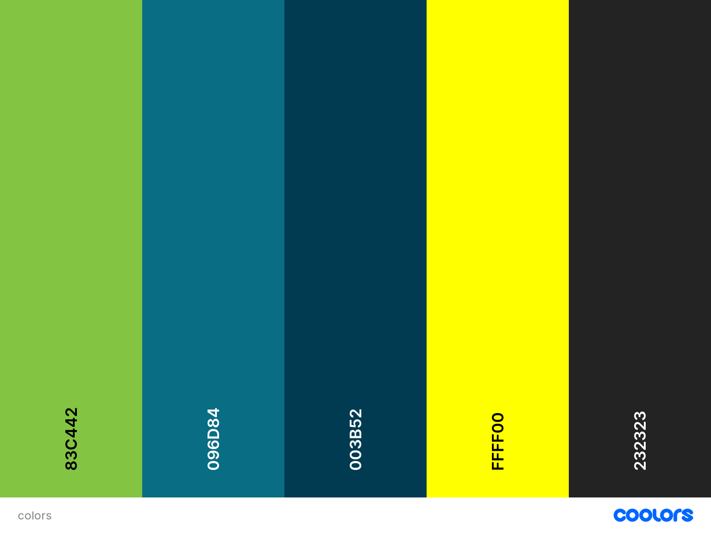

Color Scheme

These are the colors that will be used in the website.
- Yellow Green (#83C442): Primary Color. Header and footer. Some details. Logo.
- Teal Blue (#096D84): Secondary Variant. Headings. Logo.
- Indigo Dye (#003B52): Secondary Color. Nav bar.
- Yellow (#FFFF00): Accent Color. Nav hover.
- Eerie Black (#232323): Dark Default. Text, Main Heading.
- White (#FFFFFF): Light Default. Text over colored background and Main Background.